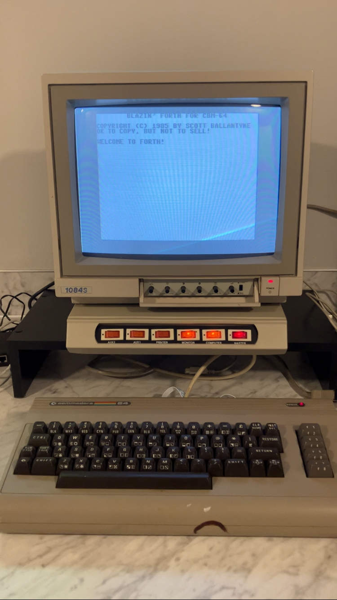

My new 40-year-old development environment
Lately, my computing interests have revolved around the following:
- Exploring programming languages (50+ so far)
- Testing out minimal development environments
- Playing with vintage computers
Thanks to some generosity and good luck, I just acquired a "new" computer on which all three interests can converge:

That's an original Commodore 64. Also known as the first computer I ever used. It sports a 1 MHz 8-bit CPU and 64 KB of RAM. Aside: despite these outdated specs, the C64 boots faster than any modern computer--it's practically instantaneous.
Given that the C64 is one of the most popular computers of all time (per Guinness), it supports a multitude of programming languages, including:
- Assembly
- BASIC
- C
- COBOL
- Forth
- FORTRAN
- Lisp
- Logo
- Pascal
- Prolog
There's even, apparently, a 16 KB minimal JVM.
The plan
Obviously, the task at hand is to solve a few Project Euler problems using a mid-80s development environment. I've already sovled a problem using Commodore BASIC (using an emulator, since I didn't have a C64 at the time), so next up I'm looking at the following (likely in this order):
- Blazin' Forth, by Scott Ballantyne (1985)
- MicroLisp, by Nicholas Vrtis (1986)
- G-Pascal, by Nick Gammon (1982)
Blazin' Forth
I've actually spent a bit of time tinkering with Blazin' Forth already. So far, it feels like a supremely authentic implementation of Forth. Notably, Blazin' Forth feels like a self-contained little operating system--it even implements its own line-based text editor and block-based storage--no file system needed. Note: in the long run, I'm not sure this is a good tradeoff, but from a self-hosting and bootstrapping perspective, it's nifty (also: did I mention there's only 64 KB of RAM?).
That's all I have for now. Until next time!